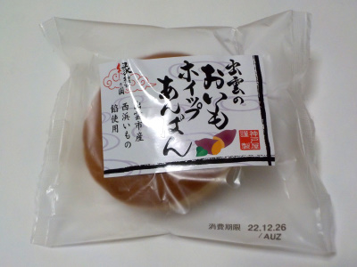
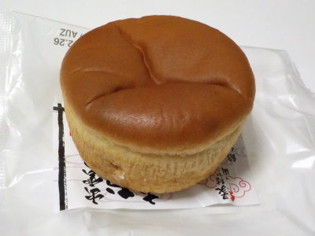
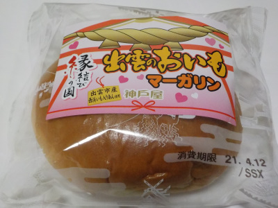
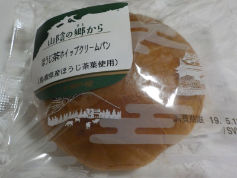
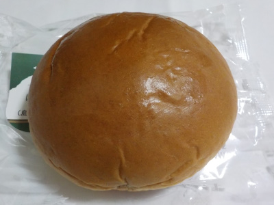
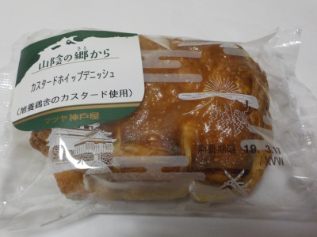
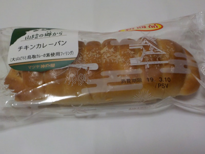
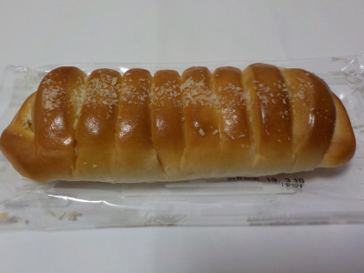
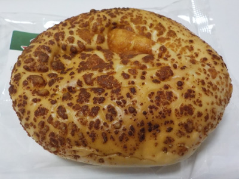
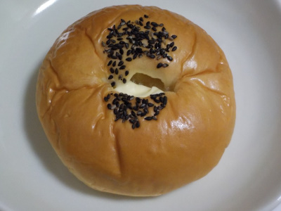

マツヤ神戸屋の出雲のおいもホイップあんぱん。
2022/12/26

さつまいもあんとポイップクリームが入ったアンパンです。

見た感じはアンパンというよりはカップケーキです。
中には甘いさつまいも餡とホイッププリームが入っているので、食べた感じも洋菓子っぽかったです。
濃い味で美味しいお菓子でした。
島根県松江市矢田町250番地20
2022/12/26

さつまいもあんとポイップクリームが入ったアンパンです。

見た感じはアンパンというよりはカップケーキです。
中には甘いさつまいも餡とホイッププリームが入っているので、食べた感じも洋菓子っぽかったです。
濃い味で美味しいお菓子でした。
2021/04/11

イチゴジャム＆マーガリンとかありますが、
さつまいもアン＆マーガリンも美味しいですね。
さつまいもとマーガリンなのでスイートポテトっぽい感じかなと思ったんですが、さつまいもアンとマーガリンのそれぞれの味でした。
スイートポテト味よりこっちの方が美味しい。
マツヤ神戸屋さんのパッケージはとってもゆるいですね。田舎感があって好きです。
今日は出雲市の選挙がありましたが、出雲市はもっと田舎っぽく栄えて欲しいと思い投票しました。
2019/05/12
抹茶のクリームのようなサッパリ感がありました。でも味はほうじ茶です。

外見はシンプルですね。

中には小倉かのこも入ってるので、お茶と小倉で和風感が強くありました。
相性がいい組み合わせの具材が入っているので美味しかったです。
2019/03/15
菓子パンのデニッシュってふんわり軽くて、中の甘い具を楽しむものが多いと思うんですが、このパンはデニッシュが厚くバター感がありました。

中のポイップとカスタードクリームもちゃんと甘いのが入っていたので、パンとクリーム両方の味がたのしめました。
2019/03/11
山陰の郷からシリーズのチキンカレーパンです。大山どりと鳥取カレーの素使用フィリングだそうです。
フィリングってなんかお洒落な言い方ですね。でもそゆう分かりにくいのって嫌いだなー。ごまかされてる感じがする。カレーパンって書いてるんだからパンでいいと思うな。

焼きカレーパンっぽいです。

マイルドなカレーに小さい鶏肉が入ってました。鶏肉に歯があたると、これが大山どりだ!って味を確かめながらたべました。
素材が楽しめて良かったです。
2019/01/20
島根のたまごですね。
玉子ってなんとなく地元産があたりまえかと思っていたんですが、そうじゃないんですね。
ドラッグストアで買ったものを見たら宮崎産でした。フードマイレージを考えると産地を見て買わないといけませんね。

今度からは地産地消を考えて島根産の玉子を買おうかなと思いました。
2018/12/07
さつまいものあんぱんです。

マーガリンがあるので、レンジでチンしてたべました。
暖かいと美味しいです。さつまいもの甘さが引き立ちます。
でも、マーガリンの溶けたのがパンに浸み込まないで、食べた切り口から流れ出てしまいました。
手が汚れてしまった。
食べる時には注意しましょう。
上手に食べれたらとってもいい商品だと思いました。これからアンパンはチンしてたべようかな。
2018/09/09
マツヤ神戸屋の大山ブルーベリーホイップ
2018/03/11
マツヤ神戸屋のチーズ＆カレーパン
2018/03/05
マツヤ神戸屋のいちご＆練乳あんぱん
2018/02/06
マツヤ神戸屋のもっちりたまごサラダぱん
2017/12/13
マツヤ神戸屋の抹茶クリームパン